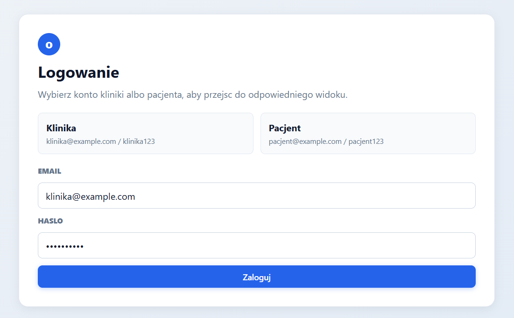
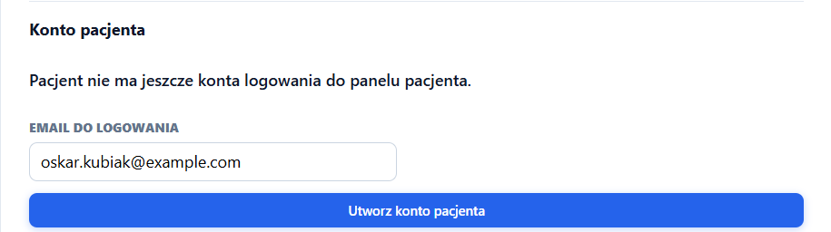
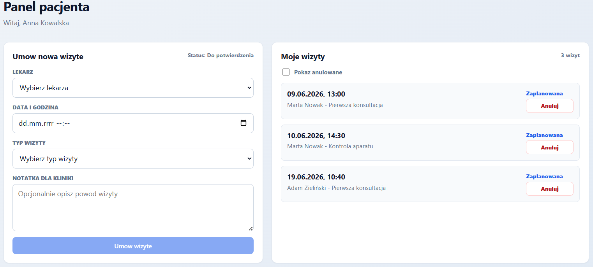
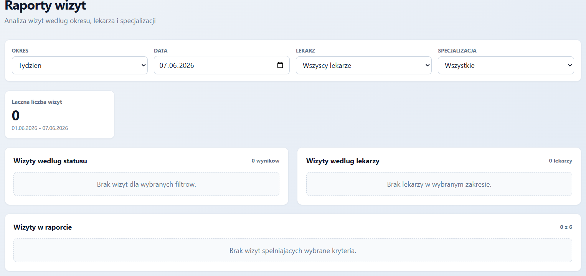

ℹ️ Aby zapisać jako PDF: naciśnij Ctrl+P → Drukarka: Zapisz jako PDF → Marginesy: Brak → Zapisz
🦷
Raport prezentujący projekt
Orthodontic Clinic App
Aplikacja webowa do zarządzania kliniką ortodontyczną
| Nazwa przedmiotu | Frameworki front-end |
| Grupa | N22-31 |
| Rok akademicki | 2025/2026 |
| Repozytorium | https://github.com/if660/Orthodontic_clinic_app |
Autorzy:
Izabela Filipkowska, nr indeksu: 284035
Krystyna Dyzma, nr indeksu: 301381
Paulina Majerkiewicz, nr indeksu: 298528
Diana Błaszczyk, nr indeksu: 298557
Spis treści
- 1.Cel projektu
- 2.Założenia projektu
- 2.1.Architektura aplikacji
- 2.2.Struktura projektu
- 2.3.Wybrane technologie i uzasadnienie
- 3.Baza danych
- 4.Funkcjonalność aplikacji
- 4.1.Panel główny aplikacji
- 4.2.Moduł lekarzy
- 4.3.Moduł pacjentów
- 4.4.Moduł wizyt
- 4.5.Moduł dokumentów pacjenta
- 4.6.Konteneryzacja aplikacji
- 4.7.Moduł logowania i ról użytkowników
- 4.8.Panel pacjenta
- 4.9.Moduł raportów wizyt
- 5.Przygotowanie projektu
- 5.1.Ustalenie tematu i podział pracy
- 5.2.Przygotowanie repozytorium i struktury projektu
- 5.3.Przygotowanie modeli danych i bazy
- 5.4.Przygotowanie backendu i kontrolerów REST API
- 5.5.Testowanie backendu w Swaggerze
- 5.6.Przygotowanie struktury frontendu
- 5.7.Przygotowanie routingu i nawigacji
- 5.8.Przygotowanie modułu pacjentów
- 5.9.Przygotowanie modułu lekarzy
- 5.10.Przygotowanie modułu wizyt
- 5.11.Przygotowanie modułu dokumentów pacjenta
- 5.12.Przygotowanie panelu głównego
- 5.13.Konteneryzacja i konfiguracja Docker
- 5.14.Przygotowanie logowania i panelu pacjenta
- 5.15.Przygotowanie modułu raportów wizyt
- 5.16.Integracja i sprawdzenie działania aplikacji
- 6.Podsumowanie
1. Cel projektu
Celem projektu było przygotowanie aplikacji webowej wspierającej obsługę kliniki ortodontycznej. Orthodontic Clinic App jest systemem biznesowym przeznaczonym dla pracowników recepcji lub gabinetu. Aplikacja umożliwia zarządzanie podstawowymi danymi kliniki, w szczególności pacjentami, lekarzami oraz wizytami.
Projekt realizuje podstawowe operacje CRUD: dodawanie danych, odczytywanie danych, edycję oraz usuwanie rekordów. System składa się z osobnego backendu REST API oraz aplikacji frontendowej wykonanej w Vue 3.
2. Założenia projektu
2.1. Architektura aplikacji
Aplikacja została przygotowana w architekturze klient-serwer. Frontend odpowiada za interfejs użytkownika, routing oraz komunikację z API. Backend odpowiada za kontrolery REST, obsługę logiki zapisu i odczytu danych oraz połączenie z bazą danych.
Ogólny przepływ działania aplikacji: użytkownik korzysta z aplikacji Vue, frontend wysyła zapytania do REST API, backend obsługuje zapytania przez kontrolery i Entity Framework Core, a dane są zapisywane w bazie SQL Server.

2.2. Struktura projektu
Projekt jest podzielony na dwie główne części:
backend/OrthodonticClinic.Api – aplikacja ASP.NET Core Web APIfrontend/ – aplikacja Vue 3 + TypeScript + Vite
2.3. Wybrane technologie i uzasadnienie
| Obszar | Technologia | Uzasadnienie |
|---|
| Backend | ASP.NET Core Web API | Umożliwia stworzenie REST API z kontrolerami obsługującymi zapytania HTTP. |
| Backend | Entity Framework Core | Pozwala mapować modele aplikacji na tabele w bazie danych i wykonywać operacje CRUD. |
| Backend | SQL Server | Realna baza danych używana do przechowywania pacjentów, lekarzy, wizyt i dokumentów. |
| Backend | Swagger | Umożliwia testowanie endpointów API bezpośrednio z przeglądarki. |
| Frontend | Vue 3 | Framework front-end użyty do budowy interfejsu użytkownika. |
| Frontend | TypeScript | Zapewnia typowanie danych i zwiększa bezpieczeństwo kodu. |
| Frontend | Vue Router | Obsługuje nawigację pomiędzy widokami aplikacji bez przeładowywania strony. |
| Frontend | Axios | Służy do komunikacji frontendu z backendem REST API. |
| Frontend | Vite | Narzędzie do uruchamiania i budowania aplikacji frontendowej. |
| Infra | Docker / docker-compose | Konteneryzacja aplikacji umożliwiająca uruchomienie na dowolnym środowisku. |
3. Baza danych
W aplikacji przewidziano główne encje odpowiadające rzeczywistym elementom działania kliniki ortodontycznej:
- Patients – pacjenci kliniki,
- Doctors – lekarze / ortodonci,
- Appointments – wizyty przypisane do pacjentów i lekarzy,
- PatientDocuments – dokumenty binarne (pliki PDF, JPG, DOC) przypisane do pacjentów,
- AppUsers – konta użytkowników aplikacji wykorzystywane do logowania i rozróżniania ról.
Relacje w bazie pozwalają powiązać wizytę z konkretnym pacjentem oraz konkretnym lekarzem. Dokument jest powiązany z pacjentem przez klucz obcy PatientId. Dane binarne pliku są przechowywane jako kolumna varbinary(max), co pozwala przechowywać pliki dowolnego rozmiaru bezpośrednio w bazie danych SQL Server.
Baza danych została rozszerzona o tabelę użytkowników aplikacji, która umożliwia obsługę logowania oraz rozróżnienie ról użytkowników. System przewiduje role kliniki oraz pacjenta. Konto użytkownika przechowuje adres email, skrót hasła, rolę, opcjonalne powiązanie z pacjentem oraz informację, czy użytkownik musi zmienić hasło po pierwszym logowaniu.
Dzięki relacji pomiędzy kontem użytkownika a pacjentem możliwe jest wyświetlanie pacjentowi wyłącznie jego własnych danych i wizyt. Flaga MustChangePassword pozwala wymusić zmianę hasła po utworzeniu konta przez klinikę.

4. Funkcjonalność aplikacji
Aplikacja składa się z kilku widoków i modułów. Główne funkcjonalności systemu obejmują zarządzanie pacjentami, lekarzami, wizytami, dokumentami pacjenta, panel główny z podsumowaniem danych, logowanie z podziałem na role, panel pacjenta oraz raporty wizyt.
4.1. Panel główny aplikacji
Panel główny jest stroną startową aplikacji. Po wejściu do systemu użytkownik otrzymuje szybki podgląd najważniejszych informacji oraz może przejść do głównych modułów aplikacji.
- wyświetlenie liczby pacjentów zapisanych w systemie,
- wyświetlenie liczby lekarzy dostępnych w klinice,
- podsumowanie specjalizacji lekarzy,
- lista ostatnio dodanych pacjentów,
- klikalne kafelki prowadzące do modułów pacjentów i lekarzy.
Dane w panelu głównym są pobierane z serwisów API, a wartości podsumowań są obliczane po stronie frontendu z wykorzystaniem właściwości computed.


4.2. Moduł lekarzy
Moduł lekarzy pozwala zarządzać danymi lekarzy pracujących w klinice ortodontycznej. Został przygotowany po stronie backendu oraz frontendu.
- wyświetlanie listy lekarzy,
- wyszukiwanie lekarzy po imieniu, nazwisku lub specjalizacji,
- dodawanie nowego lekarza,
- edycja danych lekarza,
- usuwanie lekarza z potwierdzeniem w modalu,
- podgląd szczegółów lekarza.
4.2.1. Backend modułu lekarzy
| Metoda | Endpoint | Opis |
|---|
| GET | /api/Doctor | Pobranie listy lekarzy |
| GET | /api/Doctor/{id} | Pobranie danych jednego lekarza |
| POST | /api/Doctor | Dodanie nowego lekarza |
| PUT | /api/Doctor/{id} | Aktualizacja danych lekarza |
| DELETE | /api/Doctor/{id} | Usunięcie lekarza |
4.2.2. Frontend modułu lekarzy
| Plik | Zastosowanie |
|---|
| src/types/doctor.ts | Typy TypeScript dla lekarza i formularza |
| src/services/doctorService.ts | Funkcje komunikujące się z endpointem /api/Doctor przez Axios |
| src/views/doctors | Widoki listy, dodawania, edycji i szczegółów lekarza |
| src/components/doctors/DoctorTable.vue | Komponent tabeli lekarzy z akcjami |
| src/components/doctors/DoctorForm.vue | Wspólny formularz dodawania i edycji lekarza |
| src/components/doctors/DoctorDeleteModal.vue | Modal potwierdzający usunięcie lekarza |
Lista lekarzy korzysta z filtrowania po stronie frontendu. Formularz lekarza posiada prostą walidację pól wymaganych: imienia, nazwiska i specjalizacji. Usuwanie lekarza odbywa się przez modal z potwierdzeniem, który wykorzystuje mechanizmy Teleport oraz Transition.
4.3. Moduł pacjentów
Moduł pacjentów obejmuje pełny zestaw operacji CRUD: wyświetlanie listy pacjentów, dodawanie nowego pacjenta, edycję danych, podgląd szczegółów oraz usuwanie z potwierdzeniem w modalu. Lista pacjentów prezentuje dane w tabeli z kolumnami: imię, nazwisko, telefon, email, data urodzenia oraz akcje. Na urządzeniach mobilnych lista przełącza się na widok kart.
Formularz dodawania i edycji pacjenta zawiera walidację pól wymaganych oraz walidację formatu adresu email. Usuwanie odbywa się przez modal z potwierdzeniem. Po wykonaniu operacji wyświetlany jest alert informujący o sukcesie lub błędzie.
Frontend modułu pacjentów wykorzystuje następujące komponenty i widoki:
PatientsListView.vue — lista pacjentówPatientAddView.vue — formularz dodawaniaPatientEditView.vue — formularz edycjiPatientDetailsView.vue — szczegóły pacjenta z historią wizyt i dokumentamiPatientTable.vue — komponent tabeli z kartami mobilePatientForm.vue — wspólny formularz dodawania i edycjiConfirmDeleteModal.vue — modal potwierdzający usunięcieAppAlert.vue, AppSpinner.vue, AppIcon.vue — komponenty pomocnicze
Moduł pacjentów wykorzystuje różne mechanizmy Vue 3. Formularz pacjenta obsługuje zarówno dodawanie, jak i edycję — możliwe dzięki zastosowaniu własnego v-model przez prop modelValue. Pola formularza są na bieżąco walidowane: błędy pojawiają się przy opuszczeniu pola (@blur) lub próbie zapisu, a ich obecność zmienia wygląd pola przez dynamiczne przypisanie klasy CSS (:class). Modal potwierdzający usunięcie pacjenta pojawia się z animacją dzięki komponentowi Transition. Interfejs korzysta również z własnych ikon SVG zaimplementowanych w komponencie AppIcon.vue.


4.4. Moduł wizyt
Moduł wizyt obsługuje planowanie i zarządzanie wizytami w klinice ortodontycznej. Wizyta jest powiązana z pacjentem i lekarzem, zawiera datę i godzinę, typ wizyty, status oraz notatki. Moduł dostępny jest pod adresami /appointments (kalendarz) oraz /appointments/list (lista tabelaryczna).
Funkcjonalności modułu:
- widok kalendarza miesięcznego i tygodniowego z kolorowanymi blokami wizyt,
- panel boczny kalendarza z harmonogramem wybranego dnia,
- dodawanie wizyty bezpośrednio z kalendarza (kliknięcie „+" na dniu),
- popup wizyty z możliwością zmiany statusu i usunięcia bez opuszczania kalendarza,
- lista wizyt z filtrami statusu, filtrami lekarza i wyszukiwarką tekstową,
- dodawanie i edycja wizyty przez dedykowany formularz,
- historia wizyt w widoku szczegółów pacjenta.
4.4.1. Backend modułu wizyt
Po stronie backendu przygotowano kontroler AppointmentController z pełnym zestawem endpointów CRUD oraz dodatkowym endpointem PATCH do zmiany statusu.
| Metoda | Endpoint | Opis |
|---|
| GET | /api/Appointment | Lista wszystkich wizyt z nazwami pacjenta i lekarza |
| GET | /api/Appointment/{id} | Szczegóły wizyty |
| POST | /api/Appointment | Dodanie nowej wizyty |
| PUT | /api/Appointment/{id} | Aktualizacja wizyty |
| PATCH | /api/Appointment/{id}/status | Zmiana samego statusu wizyty |
| DELETE | /api/Appointment/{id} | Usunięcie wizyty |
Endpoint GET zwraca dane z dołączonymi nazwami pacjenta i lekarza dzięki użyciu .Include() i projekcji LINQ. Endpoint PATCH /status umożliwia zmianę tylko pola Status bez przesyłania całego modelu — jest używany przez popup kalendarza i widok szczegółów pacjenta.
4.4.2. Frontend modułu wizyt
| Plik | Zastosowanie |
|---|
| src/types/appointment.ts | Typy, stałe (VISIT_TYPES, APPOINTMENT_STATUS_OPTIONS), funkcje pomocnicze |
| src/services/appointmentService.ts | Komunikacja z /api/Appointment (CRUD + PATCH status) |
| src/views/appointments/AppointmentCalendarView.vue | Główny kalendarz miesięczny i tygodniowy |
| src/views/appointments/AppointmentListView.vue | Tabela wizyt z filtrami statusu i lekarza |
| src/views/appointments/AppointmentAddView.vue | Formularz dodawania wizyty |
| src/views/appointments/AppointmentEditView.vue | Formularz edycji wizyty |
| src/views/appointments/AppointmentDetailsView.vue | Podgląd szczegółów wizyty |
Widok kalendarza (AppointmentCalendarView.vue) wyświetla siatkę miesięczną obliczaną przez właściwość computed z uwzględnieniem dni tygodnia i pustych komórek. Każdy lekarz ma przypisany kolor z palety, który jest spójny w całym widoku i opisany legendą. Kliknięcie dnia otwiera panel boczny z pełnym harmonogramem. Kliknięcie wizyty otwiera popup renderowany przez <Teleport to="body">, który umożliwia zmianę statusu i usunięcie bez nawigacji. Widok tygodniowy prezentuje wizyty jako bloki pozycjonowane absolutnie względem osi czasu 8:00–20:00.
Formularz wizyty został zaprojektowany z naciskiem na czytelność kliniczną: data wyróżniona jest kartą z gradientem niebieskim, typ wizyty wybierany jest przez klikalne kafelki z ikonami (🆕 Pierwsza konsultacja, 🔧 Kontrola aparatu, 🦷 Zakładanie aparatu, ✅ Zdjęcie aparatu, 📐 Retainer, 📌 Inne), a status — przez kolorowe pill-buttons. Formularz czyta parametry URL (?date, ?time, ?doctorId, ?patientId), dzięki czemu kliknięcie „+" na konkretnym dniu kalendarza automatycznie wypełnia pole daty i lekarza.
Lista wizyt (AppointmentListView.vue) oferuje filtrowanie przez klikalne przyciski statusu z licznikami (Wszystkie / Zaplanowane / Potwierdzone / Zakończone / Anulowane / Nieobecność), select lekarza oraz wyszukiwarkę tekstową po imieniu i nazwisku pacjenta, lekarzu i typie wizyty. Wyniki są sortowane malejąco według daty.


4.5. Moduł dokumentów pacjenta
Moduł dokumentów umożliwia przesyłanie i pobieranie plików binarnych powiązanych z pacjentem. Jest dostępny w widoku szczegółów pacjenta (PatientDetailsView.vue) i obsługuje pliki w formatach PDF, JPG, PNG, GIF, DOC i DOCX o rozmiarze do 10 MB.
Funkcjonalności modułu:
- lista dokumentów pacjenta z ikoną typu pliku, nazwą, rozmiarem i datą przesłania,
- przesyłanie nowego pliku z opcjonalnym polem opisu,
- pobieranie pliku (plik jest automatycznie zapisywany na dysku użytkownika),
- usuwanie dokumentu z potwierdzeniem,
- walidacja typu MIME i rozmiaru pliku po stronie backendu.
4.5.1. Backend modułu dokumentów
| Metoda | Endpoint | Opis |
|---|
| GET | /api/PatientDocument/patient/{patientId} | Lista dokumentów pacjenta (metadane, bez danych binarnych) |
| GET | /api/PatientDocument/download/{id} | Pobranie pliku binarnego |
| POST | /api/PatientDocument/upload | Przesłanie pliku (multipart/form-data) |
| DELETE | /api/PatientDocument/{id} | Usunięcie dokumentu |
Upload przyjmuje plik przez IFormFile, odczytuje bajty do pamięci i zapisuje je w bazie danych jako varbinary(max). Download zwraca File(byte[], contentType, fileName). Metadane są zwracane bez danych binarnych, co zapobiega zbędnemu przesyłaniu dużych plików przy listowaniu. Model danych PatientDocument zawiera pola: FileName, ContentType, FileData (byte[]), FileSize, Description, UploadedAt.
4.5.2. Frontend modułu dokumentów
| Plik | Zastosowanie |
|---|
| src/types/document.ts | Interfejs PatientDocument, funkcje formatFileSize i fileTypeIcon |
| src/services/documentService.ts | Upload (FormData), download (blob URL), lista, usunięcie |
Pobieranie pliku po stronie frontendu używa axios z responseType: 'blob'. Z odpowiedzi tworzony jest tymczasowy URL obiektu (URL.createObjectURL), a następnie programatycznie klikany tag <a> z atrybutem download — dzięki czemu plik zapisuje się na dysku użytkownika bez otwierania w przeglądarce.

4.6. Konteneryzacja aplikacji
Projekt przygotowano do uruchamiania w kontenerach Docker. Dzięki konteneryzacji aplikacja może być uruchomiona na dowolnym środowisku bez konieczności ręcznej instalacji .NET SDK, Node.js czy SQL Server.
Przygotowano następujące pliki konfiguracyjne:
backend/OrthodonticClinic.Api/Dockerfile — obraz backendu oparty na mcr.microsoft.com/dotnet/aspnet:10.0; etap build kompiluje aplikację .NET, etap final uruchamia skompilowany plik DLL,frontend/Dockerfile — etap build buduje aplikację Vue przez npm run build, etap final serwuje pliki statyczne przez serwer Nginx,frontend/nginx.conf — konfiguracja Nginx z obsługą routingu SPA (try_files $uri /index.html) oraz proxy dla zapytań /api/ do serwisu backendowego,docker-compose.yml — orkiestracja trzech serwisów: db (SQL Server 2022), backend (API .NET), frontend (Nginx); serwis db posiada healthcheck, a backend uruchamia się dopiero po jego pozytywnym wyniku.

4.7. Moduł logowania i ról użytkowników
W aplikacji dodano mechanizm logowania użytkowników z podziałem na role. System rozróżnia konto kliniki oraz konto pacjenta. Po zalogowaniu użytkownik otrzymuje dostęp wyłącznie do widoków przeznaczonych dla swojej roli. Klinika korzysta z panelu administracyjnego, natomiast pacjent jest przekierowywany do własnego panelu pacjenta.
Po stronie backendu przygotowano kontroler odpowiedzialny za logowanie, odczyt aktualnej sesji, tworzenie kont pacjentów oraz zmianę hasła. Do autoryzacji wykorzystano token sesji przesyłany z frontendu w nagłówku zapytania. Token zawiera między innymi rolę użytkownika oraz informację, czy konto wymaga zmiany hasła.
Po stronie frontendu przygotowano serwis authService.ts, który zapisuje sesję użytkownika, dołącza token do zapytań API oraz udostępnia informacje o aktualnej roli. Routing aplikacji został zabezpieczony tak, aby pacjent nie miał dostępu do widoków kliniki, a klinika nie była przekierowywana do panelu pacjenta.
W widoku szczegółów pacjenta klinika może utworzyć konto logowania dla konkretnego pacjenta, podając jego adres email. System generuje losowe hasło tymczasowe, które spełnia wymagania bezpieczeństwa. Przy pierwszym logowaniu pacjent zostaje automatycznie przekierowany do formularza zmiany hasła. Nowe hasło musi zawierać małą literę, dużą literę, cyfrę oraz znak specjalny.
- logowanie użytkownika na podstawie emaila i hasła,
- rozróżnienie ról: klinika i pacjent,
- ochrona tras po stronie frontendu,
- tworzenie konta pacjenta z poziomu szczegółów pacjenta,
- generowanie hasła tymczasowego,
- wymuszenie zmiany hasła przy pierwszym logowaniu,
- walidacja siły nowego hasła.


4.8. Panel pacjenta
Dla użytkownika z rolą pacjenta przygotowano osobny panel dostępny po zalogowaniu. Widok pacjenta różni się od panelu kliniki i pokazuje wyłącznie informacje dotyczące aktualnie zalogowanego pacjenta. Dzięki temu pacjent nie ma dostępu do listy wszystkich pacjentów, lekarzy ani funkcji administracyjnych kliniki.
Panel pacjenta umożliwia przeglądanie własnych wizyt oraz umówienie nowego terminu. Podczas tworzenia wizyty pacjent wybiera lekarza, datę, godzinę oraz typ wizyty. Wizyta utworzona z panelu pacjenta otrzymuje status wymagający potwierdzenia przez klinikę. Dzięki temu klinika zachowuje kontrolę nad harmonogramem i może zaakceptować lub zmienić termin zgłoszony przez pacjenta.
Dodano również możliwość anulowania wizyty z poziomu panelu pacjenta. Operacja wymaga potwierdzenia, aby ograniczyć przypadkowe anulowanie terminu. Wizyty anulowane są traktowane osobno i mogą być ukrywane lub pokazywane zależnie od filtrów w widokach kliniki.
- osobny widok dla zalogowanego pacjenta,
- wyświetlanie wizyt powiązanych z kontem pacjenta,
- możliwość zgłoszenia nowej wizyty,
- status wizyty wymagający potwierdzenia przez klinikę,
- anulowanie wizyty przez pacjenta z potwierdzeniem.

4.9. Moduł raportów wizyt
W aplikacji dodano moduł raportów wizyt dostępny z poziomu nawigacji kliniki. Widok raportów korzysta z danych pobieranych z istniejącego API wizyt i przelicza statystyki po stronie frontendu. Dzięki temu nie było konieczne tworzenie osobnego mechanizmu raportowego po stronie backendu.
Raporty pozwalają analizować wizyty według wybranego okresu oraz lekarza. Użytkownik może wybrać raport dzienny, tygodniowy lub miesięczny. Dodatkowo możliwe jest ograniczenie wyników do konkretnego lekarza albo wyświetlenie danych dla wszystkich lekarzy.
Widok prezentuje łączną liczbę wizyt, liczbę wizyt według statusu oraz zestawienie wizyt według lekarzy. Dane są obliczane dynamicznie za pomocą właściwości computed, dzięki czemu zmiana filtrów natychmiast aktualizuje widoczne podsumowania.
- wybór okresu raportu: dzień, tydzień lub miesiąc,
- filtrowanie raportu według lekarza,
- podsumowanie łącznej liczby wizyt,
- liczba wizyt według statusów,
- zestawienie wizyt według lekarzy,
- dynamiczne przeliczanie danych po zmianie filtrów.

5. Przygotowanie projektu
5.2. Przygotowanie repozytorium i struktury projektu
Projekt został umieszczony w repozytorium GitHub, co pozwoliło na wspólną pracę zespołu oraz kontrolowanie zmian w kodzie. Struktura projektu została podzielona na dwie główne części: backend oraz frontend. Backend został przygotowany jako aplikacja ASP.NET Core Web API, natomiast frontend jako osobna aplikacja Vue 3 z TypeScript i Vite. Dzięki takiemu podziałowi projekt zachowuje architekturę klient-serwer, gdzie frontend odpowiada za interfejs użytkownika, a backend za obsługę danych i komunikację z bazą.
5.3. Przygotowanie modeli danych i bazy
Kolejnym etapem było przygotowanie modeli danych odpowiadających głównym elementom systemu kliniki. W projekcie utworzono modele pacjenta, lekarza, wizyty oraz dokumentu pacjenta. Modele te odpowiadają tabelom w bazie danych i są wykorzystywane przez Entity Framework Core.
W bazie danych przewidziano tabele Patients, Doctors, Appointments oraz PatientDocuments. Wizyta jest powiązana z pacjentem oraz lekarzem, a dokument — z pacjentem. Takie relacje pozwalają odwzorować rzeczywisty proces obsługi wizyt i dokumentacji w klinice ortodontycznej.
Przygotowano kontekst bazy danych AppDbContext, w którym zdefiniowano zbiory danych dla poszczególnych encji oraz przykładowe dane startowe. Dla tabeli PatientDocuments wygenerowano i zastosowano migrację EF Core. Dzięki temu po uruchomieniu aplikacji możliwe było testowanie działania systemu na gotowych rekordach.

5.4. Przygotowanie backendu i kontrolerów REST API
Po przygotowaniu modeli danych rozpoczęto tworzenie kontrolerów REST API dla głównych encji aplikacji. Kontrolery odpowiadają za obsługę zapytań HTTP wysyłanych z frontendu oraz za komunikację z bazą danych przez Entity Framework Core. Dla modułów aplikacji przewidziano standardowe operacje CRUD, czyli dodawanie, pobieranie, edycję oraz usuwanie danych.
Kontrolery zostały przygotowane dla poszczególnych części systemu: PatientController, DoctorController, AppointmentController oraz PatientDocumentController. W kontrolerach zastosowano obsługę błędów za pomocą bloków try/catch. Dzięki temu w przypadku problemu backend zwraca odpowiedni kod HTTP oraz komunikat w formacie JSON. Endpointy były sprawdzane w Swaggerze przed podłączeniem ich do aplikacji frontendowej.
5.5. Testowanie backendu w Swaggerze
Przed podłączeniem frontendu sprawdzono działanie endpointów backendu w Swaggerze. Testowano między innymi pobieranie listy lekarzy, dodawanie nowego lekarza, edycję danych, usuwanie oraz pobieranie szczegółów po identyfikatorze. Testowanie w Swaggerze pozwoliło upewnić się, że backend poprawnie komunikuje się z bazą danych i zwraca odpowiednie odpowiedzi HTTP.
5.6. Przygotowanie struktury frontendu
Po stronie frontendu przygotowano strukturę aplikacji Vue 3. Projekt został podzielony na foldery przechowujące widoki, komponenty, serwisy API, typy danych, routing oraz zasoby graficzne. Widoki odpowiadają konkretnym stronom aplikacji. Komponenty zostały wykorzystane do elementów wielokrotnego użytku, takich jak tabele, formularze, modale, alerty, ikony i pasek nawigacji.

5.7. Przygotowanie routingu i nawigacji
Skonfigurowano routing aplikacji z wykorzystaniem Vue Router. Moduły pacjentów, lekarzy i wizyt otrzymały osobne ścieżki z podstronami dla dodawania, edycji i szczegółów. Dodano globalny pasek nawigacji widoczny na wszystkich stronach aplikacji.


5.8. Przygotowanie modułu pacjentów
Moduł pacjentów został przygotowany jako jedna z głównych części aplikacji, obejmująca zarówno backend REST API, jak i kompletny interfejs frontendowy. Po stronie backendu dodano kontroler PatientController obsługujący pełny zestaw operacji CRUD dla encji Patient. Każdy endpoint otoczono blokiem try/catch, dzięki czemu w przypadku błędu backend zwraca odpowiedni kod HTTP wraz z komunikatem w formacie JSON.
Po stronie frontendu przygotowano strukturę folderów z widokami, komponentami, serwisem API oraz typami TypeScript. Komunikacja z backendem odbywa się przez patientService.ts wykorzystujący Axios. Routing SPA skonfigurowano z wykorzystaniem Vue Router — moduł pacjentów obsługuje ścieżki /patients, /patients/new, /patients/:id oraz /patients/:id/edit.
Formularz pacjenta posiada walidację pól wymaganych oraz walidację formatu adresu email. Komponent PatientForm.vue jest współdzielony między widokiem dodawania i edycji. Modal usuwania wykorzystuje mechanizmy Teleport i Transition. Interfejs jest responsywny — na urządzeniach mobilnych tabela przełącza się na widok kart.


5.9. Przygotowanie modułu lekarzy
W ramach modułu lekarzy przygotowano pełną obsługę CRUD po stronie backendu i frontendu. Po stronie backendu dodano DoctorController, a po stronie frontendu przygotowano typy danych, serwis API, widoki oraz komponenty.
Moduł lekarzy składa się z listy lekarzy, wyszukiwarki, formularza dodawania, formularza edycji, widoku szczegółów oraz modala potwierdzającego usunięcie. Formularz lekarza posiada walidację wymaganych pól: imienia, nazwiska i specjalizacji. Dla modułu lekarzy przygotowano komponenty DoctorTable.vue, DoctorForm.vue oraz DoctorDeleteModal.vue. Modal usuwania wykorzystuje mechanizmy Teleport i Transition.


5.10. Przygotowanie modułu wizyt
Moduł wizyt był przygotowywany etapami: od modelu danych i backendu, przez typy i serwisy TypeScript, aż po widoki frontendowe.
W pierwszym kroku dodano model Appointment z relacjami do Patient i Doctor (klucze obce). Następnie przygotowano AppointmentController z pełnym zestawem endpointów CRUD. Endpointy GET zwracają dane z dołączonymi nazwami pacjenta i lekarza za pomocą LINQ .Include() i projekcji anonimowej — dzięki temu frontend nie musi wykonywać dodatkowych zapytań. Dodano też endpoint PATCH /{id}/status do zmiany samego statusu, co umożliwia szybką aktualizację bez przesyłania całego modelu.
Po stronie frontendu zdefiniowano typy TypeScript w appointment.ts: interfejs Appointment, AppointmentFormPayload, typ unii AppointmentStatus ('Zaplanowana' | 'Potwierdzona' | 'Zakończona' | 'Anulowana' | 'Nieobecność'), stałe VISIT_TYPES i APPOINTMENT_STATUS_OPTIONS oraz funkcje pomocnicze do formatowania dat. Serwis appointmentService.ts obsługuje komunikację z backendem przez Axios.
Głównym widokiem modułu jest AppointmentCalendarView.vue. Komponent pobiera wizyty i lekarzy, a siatkę kalendarza oblicza właściwość computed calendarCells z uwzględnieniem dni tygodnia, pustych komórek i bieżącego dnia. Kolor każdego lekarza jest mapowany ze stałej palety kolorów (DOCTOR_PALETTE). Popup wizyty jest renderowany przez <Teleport to="body"> i wywołuje endpoint PATCH do zmiany statusu bez nawigacji do innego widoku.
Formularz wizyt (AppointmentAddView.vue, AppointmentEditView.vue) obsługuje prefilling daty i lekarza z parametrów URL, co eliminuje ręczne wpisywanie daty przy tworzeniu wizyty z kalendarza. Widok listy wizyt (AppointmentListView.vue) oferuje filtry statusu z licznikami, select lekarza i wyszukiwarkę tekstową.


5.11. Przygotowanie modułu dokumentów pacjenta
Moduł dokumentów binarnych został przygotowany jako rozszerzenie widoku szczegółów pacjenta. Po stronie backendu dodano model PatientDocument z polem FileData (byte[]) mapowanym na kolumnę varbinary(max). Kontroler PatientDocumentController obsługuje przesyłanie pliku przez IFormFile (multipart/form-data), pobieranie jako FileContentResult oraz usuwanie.
Po stronie frontendu serwis documentService.ts obsługuje upload przez FormData i pobieranie przez axios z responseType: 'blob' — plik jest zapisywany na dysku użytkownika przez programatyczne kliknięcie tagu <a download>. Konfiguracja serwera Kestrel i FormOptions w Program.cs ustawia limit przesyłanych plików na 10 MB.


5.12. Przygotowanie panelu głównego
Jako stronę startową aplikacji przygotowano panel główny. Panel pobiera dane pacjentów i lekarzy przez serwisy API, a następnie prezentuje je w formie kafelków i krótkich podsumowań. Na obecnym etapie panel główny wyświetla liczbę pacjentów, liczbę lekarzy, liczbę specjalizacji, ostatnio dodanych pacjentów oraz lekarzy według specjalizacji. Kafelki pacjentów i lekarzy są klikalne i prowadzą do odpowiednich modułów aplikacji.

5.13. Konteneryzacja i konfiguracja Docker
Na końcowym etapie projektu przygotowano pliki Docker umożliwiające uruchomienie całej aplikacji przez jedno polecenie docker-compose up. Dockerfile backendu używa wieloetapowego buildu: etap build oparty na obrazie SDK kompiluje projekt, a etap final oparty na lżejszym obrazie runtime uruchamia gotowy plik DLL. Analogicznie Dockerfile frontendu buduje statyczne pliki Vue, a następnie serwuje je przez Nginx. Plik docker-compose.yml definiuje sieć wewnętrzną, zmienne środowiskowe połączenia z bazą i healthcheck SQL Servera, dzięki czemu backend czeka na gotowość bazy przed uruchomieniem.
5.14. Przygotowanie logowania i panelu pacjenta
W kolejnym etapie projektu przygotowano obsługę logowania oraz podział aplikacji na role użytkowników. Po stronie backendu utworzono model konta użytkownika oraz kontroler odpowiedzialny za logowanie, pobieranie aktualnej sesji, tworzenie kont pacjentów i zmianę hasła. Hasła nie są przechowywane jawnie, lecz jako skrót wygenerowany przez serwis haseł.
Po stronie frontendu dodano widok logowania oraz mechanizm przechowywania sesji. Serwis autoryzacji zapisuje token użytkownika i dołącza go do kolejnych zapytań API. Router sprawdza aktualną rolę użytkownika i przekierowuje go do odpowiedniego widoku. Klinika trafia do panelu zarządzania, natomiast pacjent do własnego panelu pacjenta.
W szczegółach pacjenta dodano sekcję umożliwiającą utworzenie konta logowania dla pacjenta. Klinika podaje adres email, a system generuje losowe hasło tymczasowe. Po pierwszym logowaniu pacjent musi zmienić hasło na własne, spełniające wymagania bezpieczeństwa. Mechanizm ten pozwala połączyć administracyjne tworzenie kont z bezpiecznym przejęciem konta przez pacjenta.
5.15. Przygotowanie modułu raportów wizyt
Moduł raportów został przygotowany jako osobny widok frontendu dostępny pod ścieżką /reports. Do nawigacji aplikacji dodano link „Raporty”, widoczny dla użytkownika kliniki. Widok korzysta z istniejącego serwisu wizyt i pobiera dane z tego samego API, które zasila kalendarz oraz listę wizyt.
Najważniejszą częścią widoku są właściwości obliczeniowe computed, które filtrują wizyty według wybranego okresu i lekarza, a następnie wyliczają podsumowania. Dzięki temu raport nie wymaga dodatkowej logiki po stronie backendu, a wszystkie zmiany filtrów są od razu widoczne w interfejsie.
W widoku zastosowano elementy formularzy Vue, takie jak select z mechanizmem v-model, dynamiczne renderowanie danych przez v-for oraz warunkowe komunikaty przez v-if. Moduł raportów stanowi przykład praktycznego wykorzystania danych aplikacji do przygotowania funkcji analitycznej przydatnej z punktu widzenia pracy kliniki.
5.16. Integracja i sprawdzenie działania aplikacji
Po przygotowaniu poszczególnych modułów sprawdzano komunikację między frontendem i backendem. Backend był uruchamiany lokalnie, a jego endpointy testowano w Swaggerze. Frontend uruchamiano jako aplikację Vite i sprawdzano, czy widoki poprawnie pobierają dane z API.
W trakcie testowania sprawdzono między innymi działanie list, formularzy, walidacji, routingu, modali usuwania, kalendarza wizyt, uploadu i downloadu plików, panelu głównego, logowania, panelu pacjenta oraz modułu raportów. Dzięki temu można było upewnić się, że poszczególne części aplikacji są ze sobą połączone i działają jako jedna aplikacja SPA.
6. Podsumowanie
Orthodontic Clinic App jest kompletną aplikacją webową do zarządzania kliniką ortodontyczną, przygotowaną w architekturze klient-serwer. Backend oparty jest na ASP.NET Core 10 Web API z Entity Framework Core i bazą SQL Server. Frontend jest osobną aplikacją SPA opartą na Vue 3 z TypeScript, Vue Router, Pinia i Axios, uruchamianą przez Vite.
Projekt realizuje pełen zestaw wymagań projektowych:
- CRUD REST API — cztery kontrolery (
PatientController, DoctorController, AppointmentController, PatientDocumentController) z pełnymi operacjami GET, POST, PUT, PATCH, DELETE i odpowiednimi kodami HTTP (200, 201, 400, 404, 500),
- Osobny frontend — aplikacja SPA komunikująca się z API przez Axios, obsługująca wszystkie operacje CRUD dla każdej encji,
- Realna baza danych — SQL Server z migracjami EF Core i danymi startowymi (seed),
- Obsługa błędów — każdy endpoint otoczony blokiem try/catch zwracającym kod HTTP i komunikat JSON, po stronie frontendu komunikaty błędów wyświetlane przez komponent
AppAlert,
- Dane binarne — przesyłanie i pobieranie plików (PDF, JPG, DOC) powiązanych z pacjentem; pliki przechowywane jako
varbinary(max) w bazie danych, przesyłane przez multipart/form-data, pobierane jako blob,
- Logowanie i role — osobne widoki dla kliniki i pacjenta, tworzenie kont pacjentów oraz wymuszenie zmiany hasła przy pierwszym logowaniu,
- Raporty — analiza wizyt według okresu, lekarza i statusu, obliczana dynamicznie po stronie frontendu,
- Konteneryzacja — Dockerfile dla backendu i frontendu oraz plik
docker-compose.yml z SQL Server, healthcheckiem i siecią wewnętrzną.
Interfejs użytkownika obejmuje: panel główny z KPI i skrótami do modułów, interaktywny kalendarz wizyt w widoku miesięcznym i tygodniowym, listę wizyt z filtrami, formularze pacjentów i lekarzy z walidacją, widoki szczegółów z historią wizyt oraz sekcję dokumentacji pacjenta z możliwością uploadu i pobierania plików.
Projekt obejmuje również mechanizm logowania z podziałem na role, panel pacjenta oraz moduł raportów wizyt. Klinika może zarządzać danymi i tworzyć konta pacjentów, natomiast pacjent po zalogowaniu ma dostęp do własnego panelu, swoich wizyt oraz możliwości zgłoszenia lub anulowania terminu.
W projekcie wykorzystano wiele mechanizmów Vue, między innymi komponenty, routing, v-model, własny komponent formularzowy, computed, ref, v-for, v-if, obsługę zdarzeń, komunikację z API przez Axios oraz dynamiczne filtrowanie danych. Aplikacja została rozbudowana o funkcje biznesowe odpowiadające realnym potrzebom kliniki: planowanie wizyt, kontrolę statusów, dokumentację pacjenta, raportowanie oraz obsługę kont pacjentów.
Projekt jest przechowywany w publicznym repozytorium GitHub pod adresem https://github.com/if660/Orthodontic_clinic_app i może być uruchomiony lokalnie lub w kontenerach Docker.